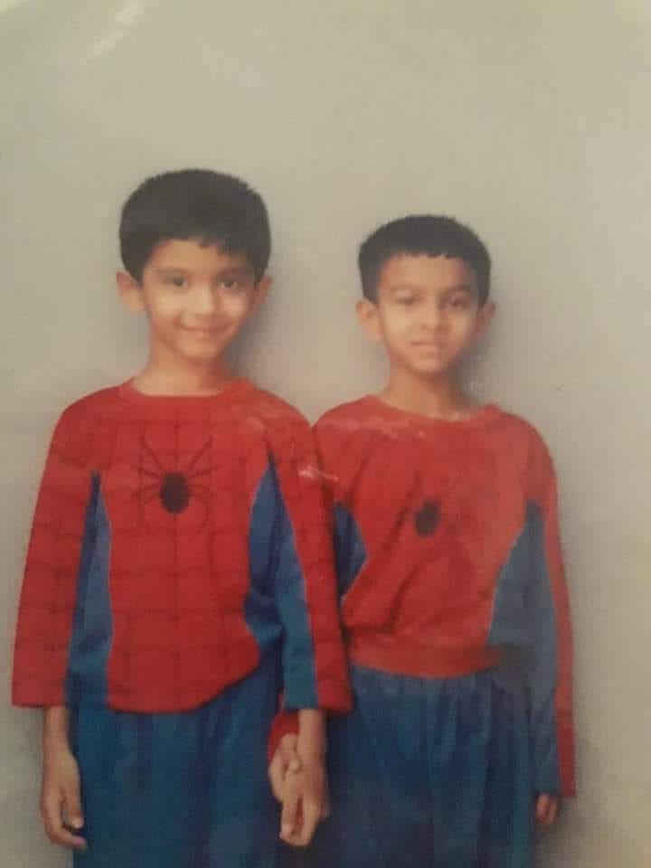
Class 1, Sports Day! Thanos better
beware, coz Eshaan and I will be waiting! (2004)
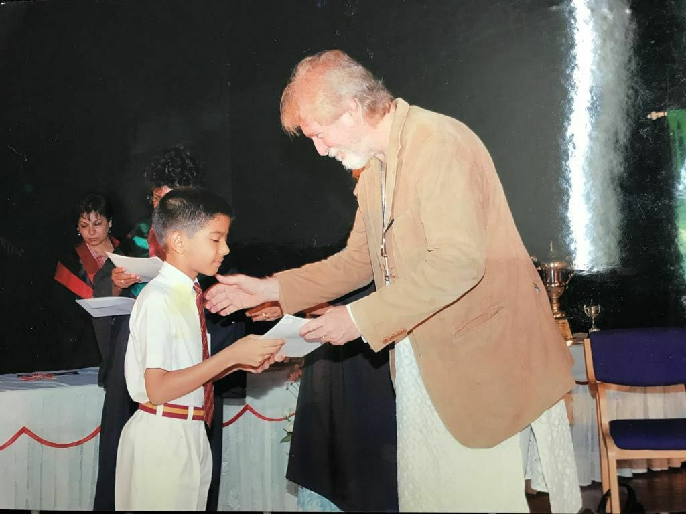
Receiving a prize for the best academic
performance in my class from a Bollywood legend, Tom Alter! (2006)
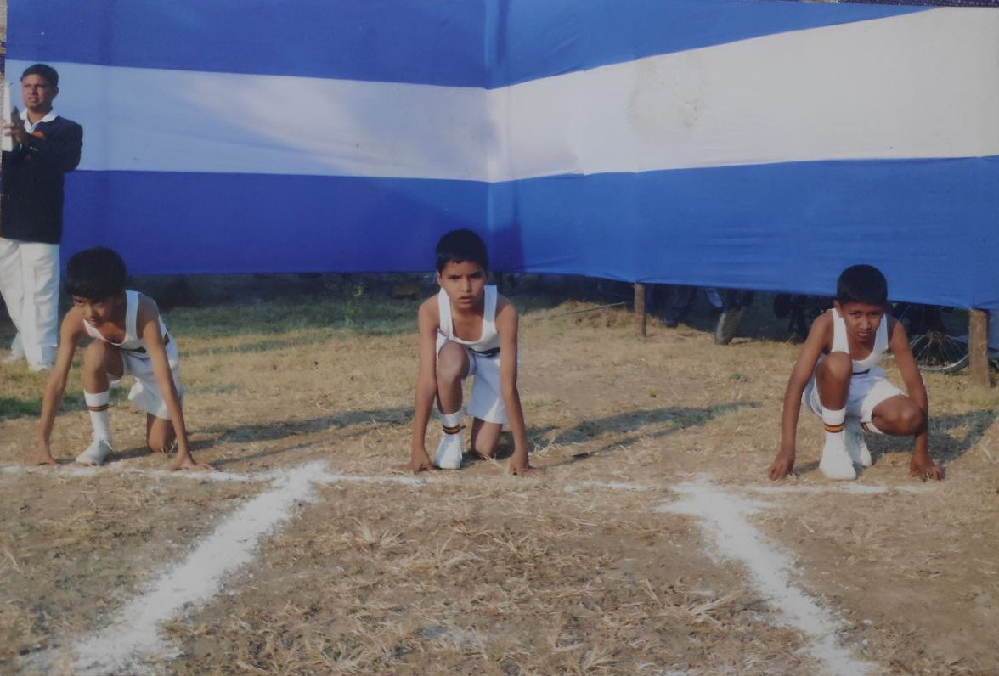
100 metre runs! Too focused to look at the
camera. Maybe too nervous to 😂! (2006)
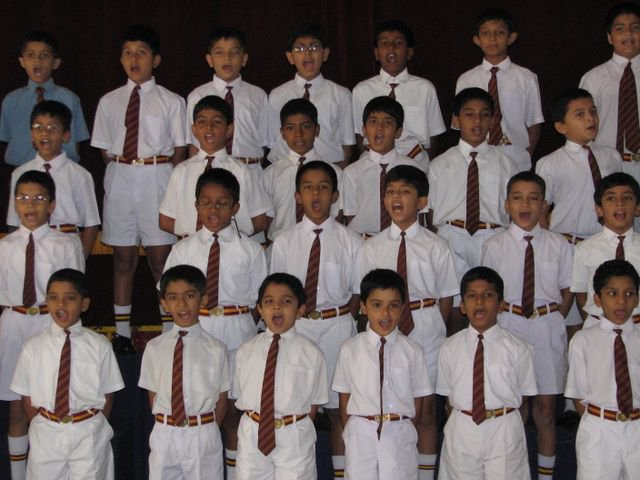
Inter-section Elocution competition! There
were extra marks for expressions 😄! (2007)
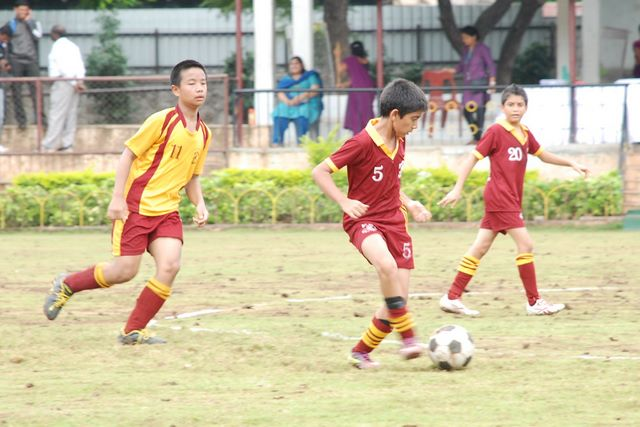
Football! My first love. Representing my
school here, definitely giving a Fabregas-esque pass to the striker. (2011)
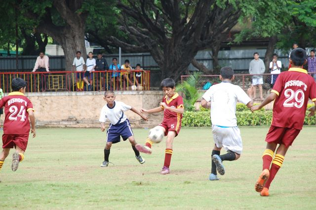
10/10 technique. 0/10 physicality. 🥲 (2011)
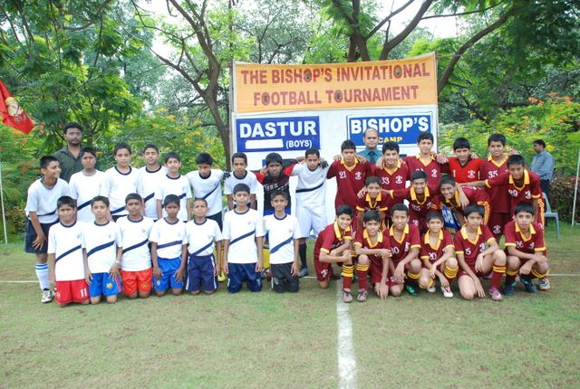
This was an insanely talented team! (2011)
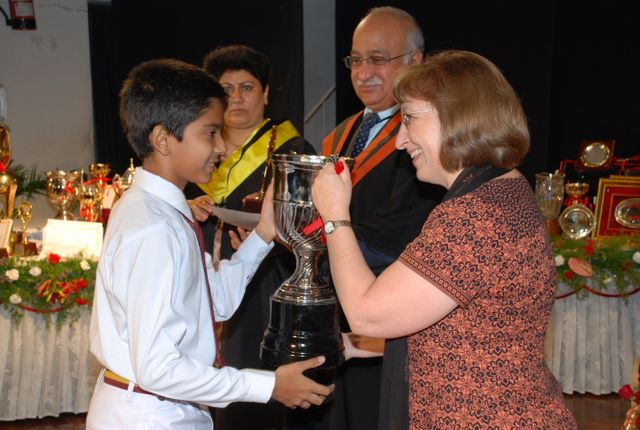
Receiving the Best Scholar trophy for
exceptional academic performance! (2012)
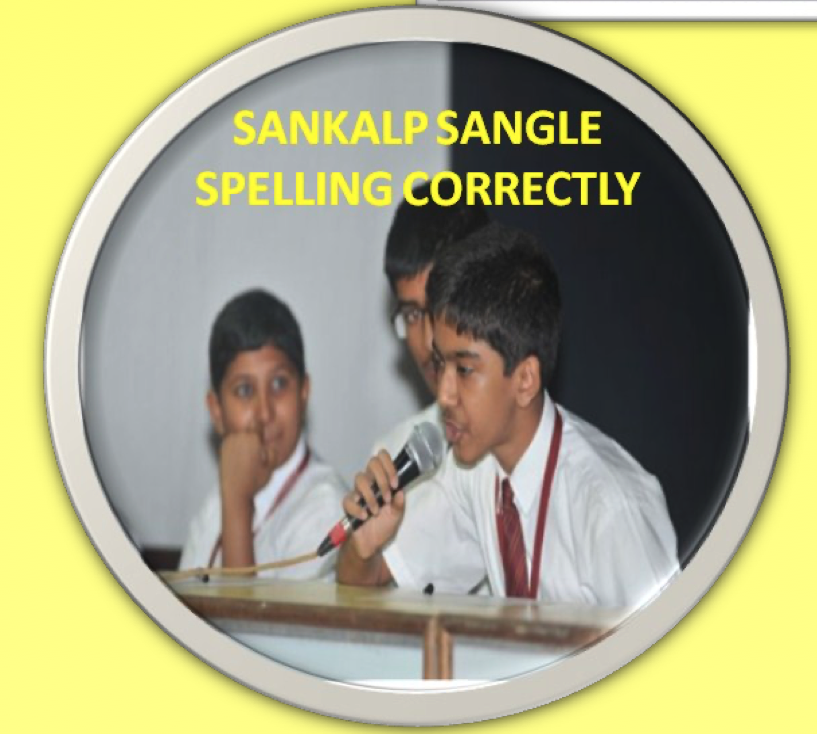
I was quite a good speller in school. Here's
a screenshot from the event report for the Inter-House spell bee competition! (2012) I was selected for an exchange program to
South Korea in class 9. Here's me with my take-in family at their home! (2012)
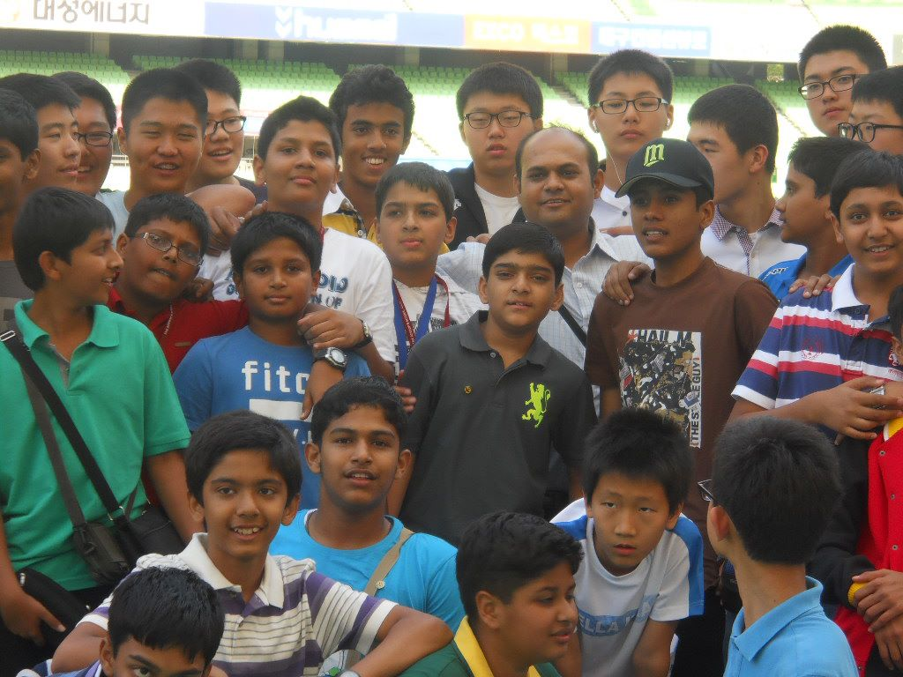
At the Daegu stadium, where Usain Bolt
famously false-started in the World Athletic Championships in 2011. I remember running on the track and naively
thinking how stupid Bolt must've been to do that. (2012)
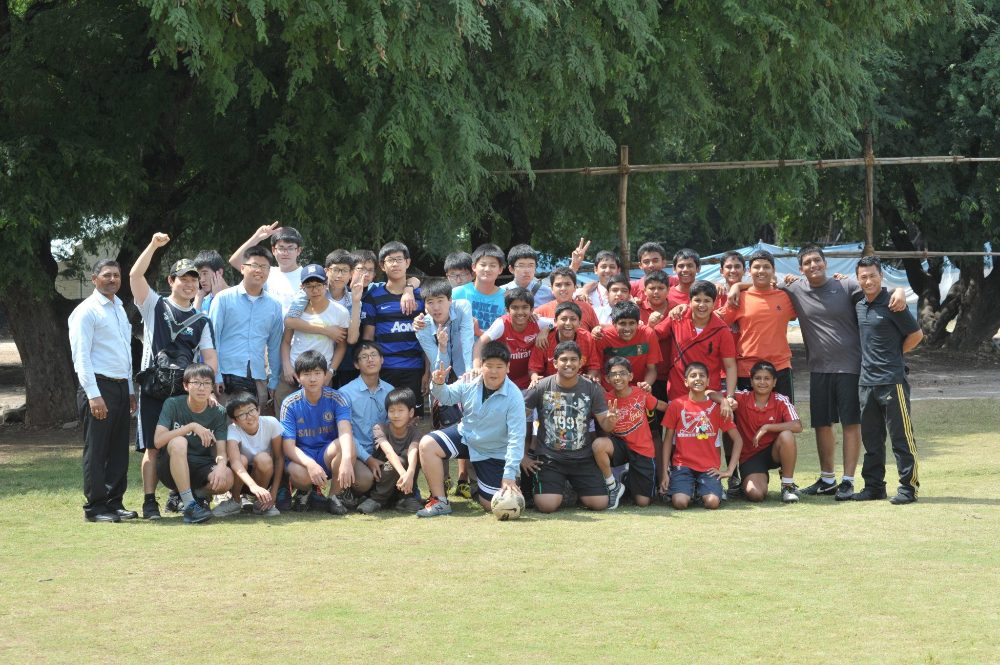
India vs South Korea in football! We lost
by a solitary goal 😒 (2012)
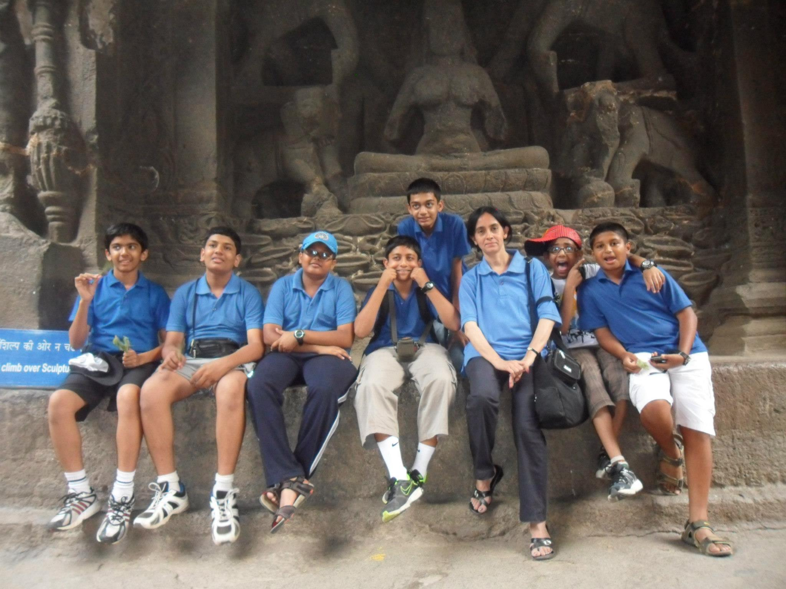
At the Ajanta Caves on a school trip!
(2012). Mrs Choudhary, our librarian and one of the sweetest people I've encountered, accompanied us. (2012)
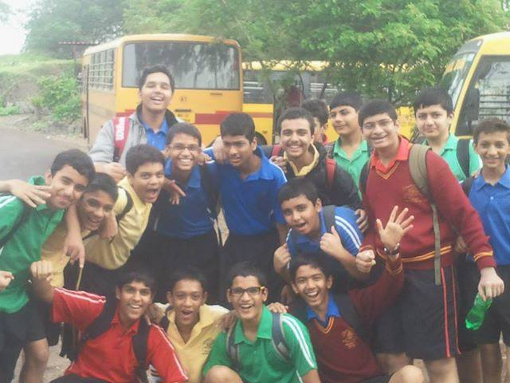
At a tree plantation event for our Socially
Useful Productive Work (SUPW) requirements. Boys just need a reason to pose. (2013)
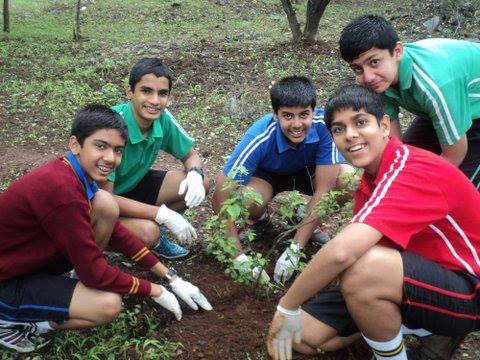
With some of my closest friends in school.
L to R : Me, Anish, Parnil, Nisarg, Mohit. (2013)
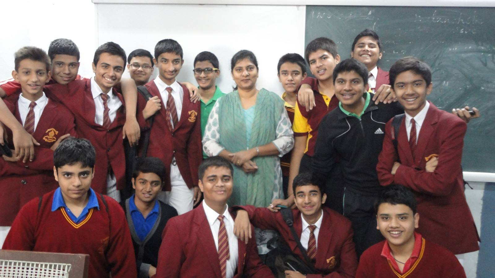
Our last English Literature class! Studying
Shakespeare was a pain but also very enlightening. Thank you Mrs. Ohol! (2014)
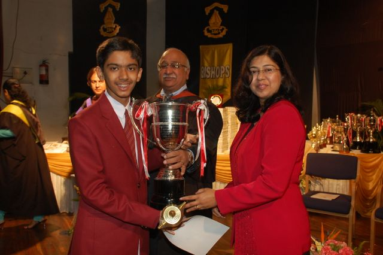
Receiving the Best Scholar trophy for Class
9 for academic performance. (2013)
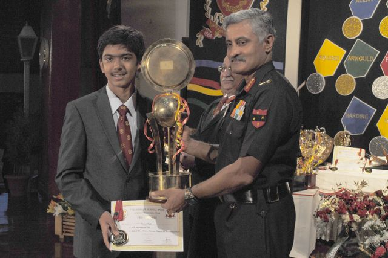
Receiving the Best Scholar trophy for
topping the Class 10 ICSE examinations. (2014)
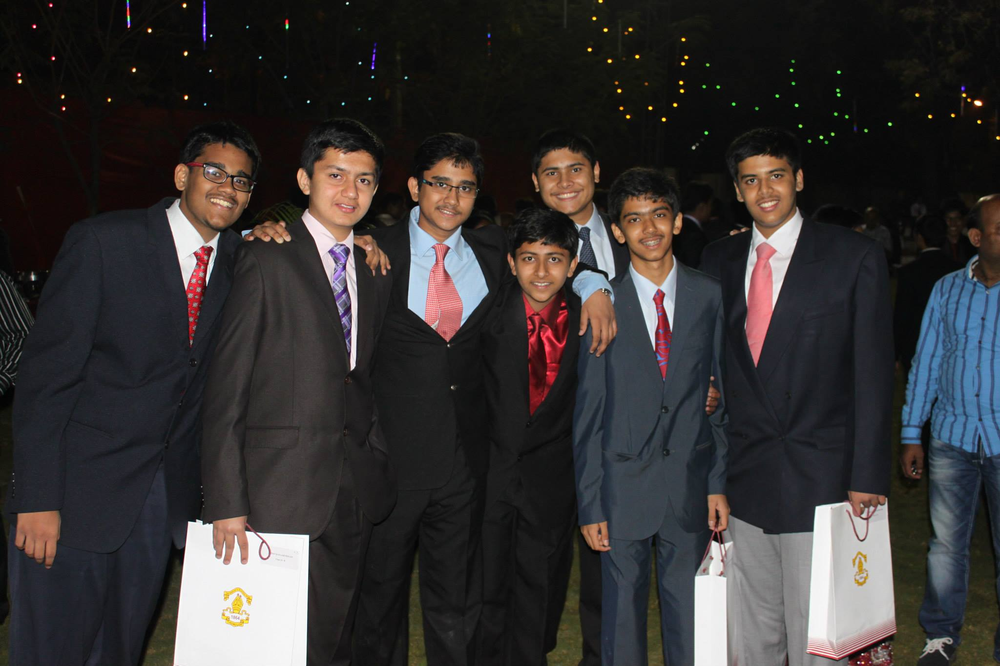
Our farewell ceremony with some of my
closest friends. We sadly drifted away over the years. L to R: Adrian, Mohit, Faraz, Ayush, Shaunak, Me, Parnil.
(2014)
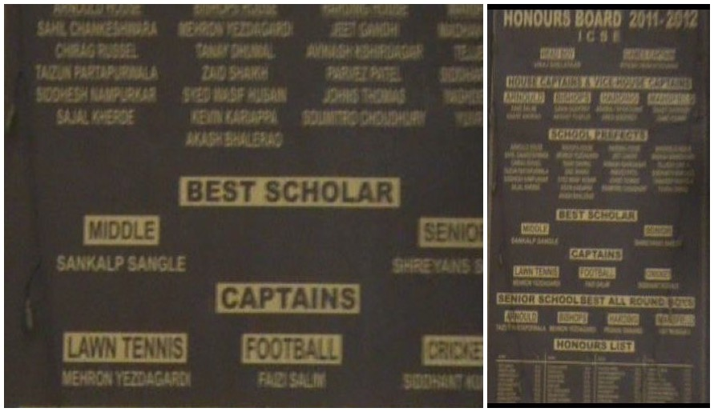
My name on the school Honours Boards! It is
an honour to be remembered this way. Play up Bishop's, never let our colours fall! (2014) 1/20